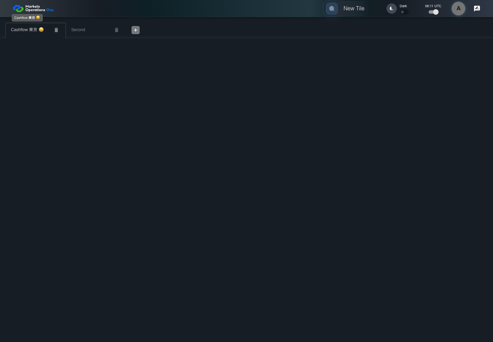

UX-044 workspace text boundary
PASS · application/run-050/ux-044-workspace-text-boundary-20bf91432217-attempt-1 · ACTUAL_APPLICATION_LOCAL_SERVICES
Actual React shell. Controlled catalog, user identity, photo failures, and SystemJS tenant. Chromium only. Accessibility and layout outcomes are proposed probes; no approved conformance standard is inferred.
2026-10-22T06:11:55.613Z to 2026-10-22T06:11:57.991Z
Assertions and result · Artifact manifest · Exact run inputs and source hashes
Result SHA-256:869b8dd21655d4d5ecd2717508326262b3331280528e01459616ea090de0fbc2Screenshot capture: CAPTURED. Named frames: 6.
Step screenshot evidence: COMPLETE. 5/5 canonical steps have execution screenshots.
Canonical step timeline
Given USER-A has the Cashflow workspace loaded
Execution: PASSED.
1. step-01 Visible state after step 1: Given USER-A has the Cashflow workspace loaded
2026-10-22T06:11:57.044Z · 1440×1000
Step: /Users/lushevol/code/github/ratan-release-impact/workbench/tasks/ui-test-coverage-20261022/test-cases.md:13660
SHA-256:0d0ebfd242118e9756787be5f5945a5dc225c1e219bce364a60e8a7d920a733dWhen USER-A types "Cashflow 東京 😀" as the replacement value in the textbox labelled "Workspace Name" in the tab labelled "Cashflow" on the Home page
Execution: PASSED.
2. step-02 Visible state after step 2: When USER-A types "Cashflow 東京 😀" as the replacement value in the textbox labelled "Workspace Name" in the tab labelled "Cashflow" on the Home page
2026-10-22T06:11:57.173Z · 1440×1000
Step: /Users/lushevol/code/github/ratan-release-impact/workbench/tasks/ui-test-coverage-20261022/test-cases.md:13661
SHA-256:2171f88da7bcba85eea73bd0c2e06fab929c0c207aeaea2df6cc24561a4b2eb7Then The workspace name input value equals "Cashflow 東京 😀"
Execution: PASSED.
3. step-03 Visible state after step 3: Then The workspace name input value equals "Cashflow 東京 😀"
2026-10-22T06:11:57.311Z · 1440×1000
Step: /Users/lushevol/code/github/ratan-release-impact/workbench/tasks/ui-test-coverage-20261022/test-cases.md:13662
SHA-256:2171f88da7bcba85eea73bd0c2e06fab929c0c207aeaea2df6cc24561a4b2eb7When USER-A hovers over the tab labelled "Cashflow 東京 😀" in the workspace tablist on the Home page
Execution: PASSED.
4. step-04 Visible state after step 4: When USER-A hovers over the tab labelled "Cashflow 東京 😀" in the workspace tablist on the Home page
2026-10-22T06:11:57.415Z · 1440×1000
Step: /Users/lushevol/code/github/ratan-release-impact/workbench/tasks/ui-test-coverage-20261022/test-cases.md:13663
SHA-256:2171f88da7bcba85eea73bd0c2e06fab929c0c207aeaea2df6cc24561a4b2eb7Then The tooltip for that workspace contains the complete text "Cashflow 東京 😀"
Execution: PASSED.
5. step-05 Visible state after step 5: Then The tooltip for that workspace contains the complete text "Cashflow 東京 😀"
2026-10-22T06:11:57.537Z · 1440×1000
Step: /Users/lushevol/code/github/ratan-release-impact/workbench/tasks/ui-test-coverage-20261022/test-cases.md:13664
SHA-256:84c5c9c2f9e7e0a27c76d5150779c91e43627860c6e1fe544600fc08bcca66d3
Additional named frames
Screenshots establish visible state only. Assertions and traces support functional claims.